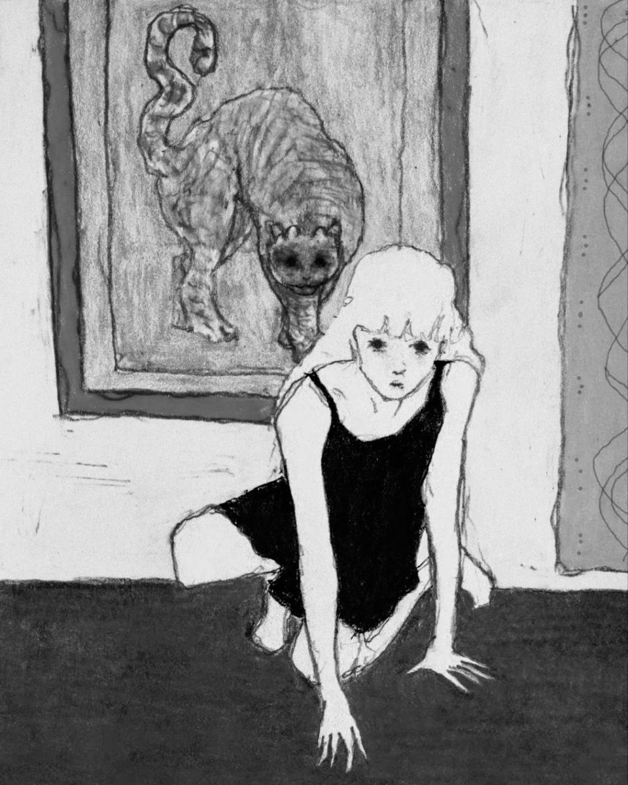

尼采论工作与游戏的部分，将游戏时间理解为工作的延伸，游戏是人在不工作时的工作，正如同工作乃是游戏——好胜心和妒忌的竞赛游戏。作为竞赛的工作与游戏共同服务于城邦的生产性目的，即城邦福祉的增长。“天神的嫉妒”在城邦政治中是一个约束性结构，当竞技场上的胜利者无可匹敌的时候，他便会感受到神祇嫉妒的目光正注视着自己，因此人变选择谦逊和献祭，以避免灾祸的降临。一旦竞争冲动无法得到节制，那么厄里斯女神便从善的面孔转向恶的面孔，召唤出暗夜之子携带的全部不详（一切不可节制的仇恨、胜利者的傲慢、残酷无情的戏谑）。但是这并不是说，厄里斯女神的邪恶力量来自于古希腊竞赛制度的崩坏和退化，不如说真正处于本体论基线的正是这种未被城邦诱导入治理轨道的、不可制约的竞技本能，就好像工作与游戏都共属于“永恒的游戏”（赫拉克利特：“永恒乃是一个玩跳棋的孩子；孩子掌握着王权。”）僭主和暴君的游戏是与诸神的竞技，这不仅仅是向着永恒游戏的回归，并且它同时是一次对神圣秩序的僭越，这一次力的对抗被抬升到了天神的高度。这是一种西班牙斗牛士的心理学类型：押注死亡，作为唯一的筹码，并从惨烈失败或者胜利中赢得荣誉和风度。神圣无辜你在哪里？！
